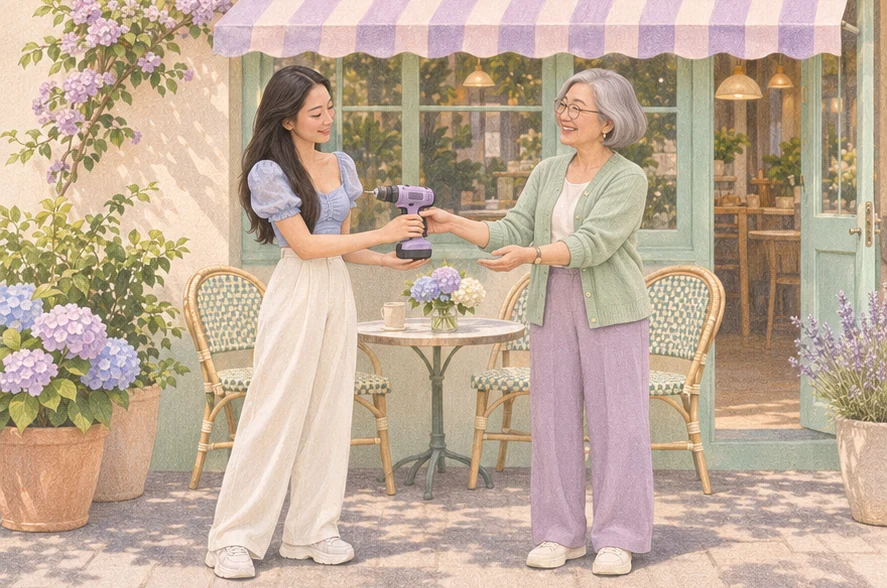
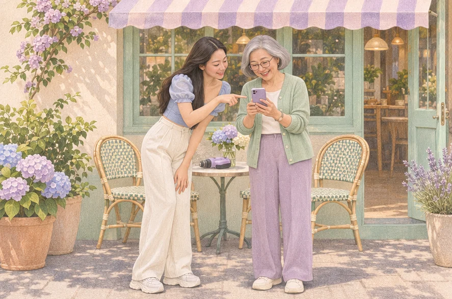

Interaction design · Tool library
Neighbor Swap
A neighborhood tool library where older neighbors lend tools and students trade smartphone help.
- Role
- Solo designer and developer · SI 582

Interaction design · Tool library
A neighborhood tool library where older neighbors lend tools and students trade smartphone help.
When I moved to Ann Arbor, I noticed how hard it was to borrow a tool before you knew your neighbors. I researched a simple exchange: borrow a drill and teach the lender how to make a video call.

I compared eight concepts using Questions, Options, and Criteria. Two-way SMS let a neighbor reply on a phone they already knew how to use.
Participation only works if lending a tool feels voluntary. A neighbor can decline a match and remain available for another request.
A student nearby needs a drill this weekend. Would you like to lend yours?
Not this time.
Got it. We’ll leave this request open for another neighbor.
I would ask a student and an older neighbor to arrange a meetup on their own phones, then check that both expect the same tool, lesson, and meeting place.
